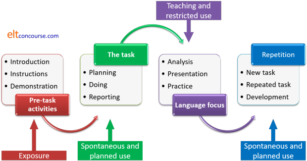

Task-based Language Teaching (TBLT)
The usual name for this approach to teaching language is Task-based Learning (TBL) but you will also find it called Task-based Language Learning (TBLL), Task-based Language Teaching (TBLT) or Task-based Instruction (TBI). Here we will refer throughout to TBLT.
 |
Origins |
The usual primary source is the work of N Prabhu (1987) who developed
a theory of TBLT while working in Bangalore, India.
This approach is based on his idea (or realisation) that learners of
English (or any language for that matter) can just as well learn the
language by focusing on non-language-based tasks as they can when
explicitly being taught the structures and functions of the language.
Hence the name, although Prabhu generally refers to what he calls a
procedural syllabus (i.e., one based on doing things
rather than overtly learning things).
The approach grew out of a frustration with the usual form of syllabus
(a list of functions and/or structures to learn) and its replacement
with a syllabus which consisted of tasks to achieve in the language,
such as finding out travel times and options and solving other everyday
problems.
 |
Principles |
Task-based language learning rests on three assumptions (which are common to all Communicative Language Teaching):
- Real, meaningful communication is essential for language learning if the aim is to improve communicative competence
- Using the language to do tasks aids learning and memorisation of language patterns and functions
- The language used in the classroom needs to be meaningful to the people using it
The fourth, often unspoken, assumption is that the achievement of a task in a foreign language is, in itself, a motivating aim and motivation is often seen as a critical component of successful language learning or acquisition.
 |
The elements of TBLT |
The following is a brief run-down of the major characteristics of a TBLT approach. It should be noted now that among proponents of the approach there are quite marked differences of opinion concerning what are and are not the most important characteristics of TBLT.
 |
Objectives |
The objective of the approach is set within with Communicative Language Teaching (of which TBL is sometimes considered a subset) and is primarily to improve communicative competence by getting learners to solve a task or set of problems by communicating together in the target language, refining their production and presenting their findings.
 |
Characteristics of tasks |
According to Ellis (2009: 223) a task has to satisfy 4 criteria to qualify as a task in this context:
- The primary focus should be on ‘meaning’ (by which is meant that learners should be mainly concerned with processing the semantic and pragmatic meaning of utterances).
- There should be some kind of ‘gap’ (i.e. a need to convey information, to express an opinion or to infer meaning).
- Learners should largely have to rely on their own resources (linguistic and non-linguistic) in order to complete the activity.
- There is a clearly defined outcome other than the use of language (i.e. the language serves as the means for achieving the outcome, not as an end in its own right).
Ellis goes on to note that traditional, language-based classroom tasks may satisfy the second and third of these criteria, insofar as information-gap exercises and the setting of a task at the beginning of a Test–Teach–Test approach to lesson design. However, criteria 1 and 4 are exclusive to the taking of a TBLT approach.
We should be careful here to note the distinctive definition of a
task in a TBLT context.
While an activity which requires learners to, say, fill in gaps in a
text with the correct preposition is undeniably a task in the
generally accepted meaning of that word, within TBLT a task is
distinguished by not being, overtly at least, a language-focused
exercise but one which parallels or simulates a real-life task.
We have, therefore, two types of task:
- language tasks (which are common to many classrooms and occur within a range of methodologies) and
- tasks whose accomplishment leads inevitably to the use of language in a real communicative setting
It is the latter definition which applies here.
 |
Tasks types |
A task need not be elaborate and it need not be the basis for a lengthy lesson or series of lessons. Here are some examples of tasks:
- Filling in an application form
- Planning a day trip
- Learning the rules of a card game and playing it
- Calling a help line
- Planning a new government and constitution
- Planning ways to end war and ensure universal peace and harmony throughout the galaxy
None of these is a language task per se so we need to distinguish between what we commonly call tasks in the classroom such as vocabulary matching exercises and gap-fill texts which are overtly language based and tasks which are overtly non-linguistic. TBL focuses on non-linguistic tasks.
Authenticity |
Some critics of TBLT have pointed out that not all tasks are of the
type which parallel the kinds of things learners will have to do in real
life and that, therefore, they lack authenticity (tasks 5 and 6 above
are obvious targets of this kind of criticism).
There are, however, two types of authenticity:
- Situational Authenticity
refers to how realistic a task is in terms of its content and aims. For example, few learners may ever need to cooperate in English to plan a day trip or play a card game, let alone plan a nation's constitution so, the criticism goes, TBLT often lacks authenticity. - Interactional authenticity
refers to how realistic in terms of language use, the task is. For example, if the task evinces a need to negotiate meaning with others, enquire and suggest etc., then it may be persuasively argued that TBLT is authentic in those terms.
It is, in some circumstances, for example, in the context of learning English for Academic purposes, possible to attain good levels of authenticity in both ways by setting tasks in which the outcomes will simulate real-life tasks that the learners will need to perform later in their studies as well as ensuring that the level of interactional authenticity is appropriate in terms of the generalised skills such learners will need to master, such as giving and responding to presentations, taking turns in seminars and researching prior to reporting findings etc.
 |
Closed and open tasks |
Traditionally, tasks come in two types:
- Closed tasks
have single (or a predictable range of) right answers.
For example, a task which requires learners to identify and categorise a set of items into, say, academic domains, will normally have only one correct answer, although some ambiguity may be built in, deliberately or otherwise. Similarly, a task to summarise a lecture or the plot of a film will, while not wholly predictable, allow of only a small range of possible outcomes. - Open tasks
are those for which no right answer or range of right answers can be provided in advance.
For example, a task which requires people to canvass a range of opinions on a topic and present the findings to a group will not have outcomes that are predictable in advance and is a task which cannot be graded in terms of right or wrong solutions.
The picture is not so simple, of course, because some tasks may
have facets which are closed and others which are open.
For example, a task which requires learners to research leisure
facilities within a 5-kilometre radius and then to plan a day out
for their own families has elements of both sorts of task: the first
closed, because the task-setter knows what is available; the second
open, because the task-setter does not have access, presumably, to
the characteristics of the learners' families or to how the learners
may speculate on what they will enjoy or benefit from and cannot
predict what will arise.
Often, the difference boils down to whether the learners are
transactional (getting something identifiable done in the language) or
interactional (talking about opinions, making social connections and
so on).
This will, naturally, lead to the need for very different language
to be used.
- Transactions
- In transactions, verb use will usually be heavily relational, quite
straightforward and relatively unmodified with items such as
This must be ...
This might go ...
That isn't ...
etc.
or the task will evince narrative and recount verbal use such as:
... and then they found themselves in ...
He said that ...
She explained ...
etc. - Interactions
- In interactions, on the other hand, verb use may well involve
projecting inner thought into language with expressions such as:
I reckon they will enjoy
I know she likes ...
I imagine ... will be very useful / entertaining / popular
I think they would probably enjoy ...
etc.
The use of discourse features may also vary substantially with transactional tasks requiring the deployment of temporal expressions as well as those which signal causation, concession and so on such as
After that, ...
In the end, ...
etc.
whereas interactional tasks may require the use of disjuncts (or sentence adverbials) such as
Definitely, ...
... because she loves ...
In my view ...
etc.
This is important because as Nunan notes (1991:286):
In addition to the fact that the different task types stimulated different interactional patterns, the research also indicated that some task types might be more appropriate than others for learners at particular levels of proficiency. ... The important thing is that program planners and teachers should select a mix of tasks to reflect the pedagogic goals of the curriculum.
When it comes to designing tasks, then, the assumption is that you will have a clear idea of what sorts of language the learners need to learn and develop before you start.
 |
Examples of types of task and levels of challenge |
Willis (1998) identifies the following and claims that any topic can form the basis of any of the task types:
| Task type | Examples | Challenge level | Open / Closed |
| Sharing personal experiences and anecdote telling | Tell your partner about you first car | Low | Open |
| Listing | Make a list of 6 things you know about cars and 6 things you know about bicycles | Low | Mixed: mostly closed |
| Comparing and matching tasks | Compare the characteristics of cars with bicycles | Low to medium | Mixed: mostly closed |
| Ordering, sorting and classifying tasks | Now classify the list into good and bad aspects with the best first and the worst last | Medium | Closed |
| Problem solving tasks | Come up with six ways of making a city less car friendly and more bicycle friendly | Medium to high depending on the learners' likely familiarity with the topic or need for research | Closed |
| Creative tasks and Project work | Write a formal plan for your town council to make the town less car friendly and more bicycle friendly | Medium to very high depending on the learners' likely familiarity with the topic or need for research | Open |
Willis, and others, do not provide a very clear way of measuring the
challenge level. However, others do. In particular, the work
of Bloom and many others in the area of designing a taxonomy of
educational objectives is influential and informative.
Very briefly, the revised taxonomy measures the level of cognitive
challenge as follows:
- Level 1: remembering
This involves simply the ability to recall a fact. For example, that the past tense of undertake is undertook. Making lists of things you have done this week, for example, falls into this category. - Level 2: understanding
This involves some deeper thought to get to grips with a fact. For example, that certain items or events have characteristics in common. Comparison and matching tasks fall mostly into this category, for example, making lists of things which are work related and those which are purely leisure activities and those which are mixed in some way. - Level 3: applying
This involves using knowledge and understanding to make a decision. For example, knowing that a lion is a carnivorous animal, understanding what that means and applying it to being cautious in approaching the animal. Classification tasks fall into this and the next category depending how demanding they are. - Level 4: analysing
This requires the application of levels 1 to 3 and then going on to breaking things down into constituents to understand fully what is happening. For example, knowing the needs and capacities of people, understanding what they entail, applying that knowledge to design of a building and then analysing the design to see how it matches. - Level 5: evaluating
This involves using all the processes in levels 1 to 4 and judging how well, for example, a building's design meets the needs of the people who will live or work in it. Identifying problems and issues falls into this category. - Level 6: creating
This is the most demanding level of all because it requires the use of the previous 5 levels in order to synthesise data into a new and original work. It is at this level that much TBLT is aimed but the error is often to start here and ignore the 5 previous levels of cognitive challenge. Without first tackling those, it is arguable that a task will not be completed to anyone's satisfaction. Creative tasks and extensive projects fall into this category.
For a more detailed consideration of Bloom's taxonomy and its various revisions, see the guide (new tab).
Pick a topic close to your heart and see if you can come up with a task in each of these categories.
 |
Focused and unfocused tasks: pedagogic vs. real-life tasks |
There is some debate within TBLT circles, and beyond them, concerning
the degree of focus which tasks may legitimately have.
In a more traditional approach, the nature of tasks and the reasons for
doing them in order to practise particular language items or subskills
is made clear. For example:
You are now going to practise turn-taking skills by debating an issue in groups of three. Don't forget to signal how you give up your turn and how you show that you would like to take a turn.
or
Talk to your partner to plan a perfect holiday saying what you think you should include and saying why you think it's a good idea. For example, "We should go to ... because it'll be a chance to ..." and so on.
These are what is sometimes called situational skill or grammar
exercises inasmuch as the explicit focus is made clear to the learners
and they know what it is, linguistically, they are supposed to do or
practise.
Another way to explain this, preferred by, e.g., Nunan (1991:282), is to
distinguish between pedagogic tasks and real-life tasks (which attempt
to simulate authenticity).
In the former:
Learners are given a model of the target language behaviour, as well as specific practice in manipulating key language items.
It is claimed that within TBLT, tasks can be both
focused, demanding the deployment of particular language items of
subskills or unfocused, demanding only general communicative competence
and practice.
Of the examples above, it is arguable that retelling an anecdote is a
task which is close to being a practice routine for spoken, informal
narrative tenses and behavioural process verbs, place and time adjuncts etc.
It is much less easy to predict or alert learners to the sorts of
language they will need or skills they need to deploy in the more
demanding tasks.
Focused tasks are therefore included, providing they satisfy the four
criteria stated by Ellis above if:
the target linguistic feature of a focused task is
‘hidden’ (i.e. learners are not told explicitly what the feature is).
(Ellis, op cit.)
The difference is one of orientation.
- In an unfocused or real-life TBLT task, the learners are focused on achieving the outcome and that is the central motivational feature and purpose for doing the task.
- In a situational skill or grammar task (a pedagogic task), the learners are focused on the language or skill they need to use and the task's outcomes are peripheral to this.
Procedures |
There is something of a small controversy here because authorities
differ on the ordering of a lesson procedure. There are
essentially two choices and which is suggested depends to a large extent
on how pure the practice is intended to be. A pure form of TBLT
which presumes that simply doing tasks will lead to language acquisition
with no overt teaching will exclude from the teaching-learning cycle any
suggestion of explicit language teaching.
There are, therefore, two approaches which can be taken although there
will be variations within each:
| Procedure 1 | Procedure 2 |
 |
 |
Notes:
- In either procedure, the content of the stages is much the same. The pre-task stage may include the learners being exposed to an example of how to tackle the task, especially if it is of the more complex, cognitively demanding sort.
- In procedure 1, language is not the focus until after the task is complete which chimes better with the approach's spirit but forces the teacher to react very flexibly to the language which has emerged and become the lesson's targets.
- In procedure 2, the teacher must be careful to plan the sorts of language presentation and their targets with regard to the exact nature of the task. This is not a straightforward endeavour.
- In both cases, the report stage can take many forms. The report may be oral, digitally presented, in the form of a poster or booklet presentation or it may contain elements of all of these.
- During the task-completion and report-planning stages, the teacher needs to be very active indeed, supplying needed language, intervening to smooth communication, micro-teaching and acting as a source of ideas and information. The teacher should get out of the way in the report-presentation phase.
- Evaluation occurs at the end of the task and is based on how well the task has been achieved, not the accuracy of the language employed to do it.
Another way to see the procedure is to focus on what the learners
are doing with the language at each stage, like this:

The final repetition phase can either be a repeat of the task, a task very similar to it but with a different topic or a task which builds on and develops the work done in the first (and any previous) task.
 |
Claimed advantages |
- Multiple language focus
- Unlike many approaches, learners are free to deploy as much language as they need rather than focus on particular structures, lexis and other items. This blending of language more closely resembles real-life language use than does the focus on individual items which a 'normal' lesson has. See, too, the comments above concerning authenticity.
- The content is relevant and personalised
- Each group of students will have their own ways of tackling tasks and their own ideas to input. Making language personal, it is claimed, makes it memorable.
- It is learner centred
- Compared to a traditional lesson (whatever that may be), the teacher's role is reduced and the majority of the time is spent with the learners constructing meaning together.
- It is suitable for mixed ability groups
- Clearly, groups can be formed which are nearly homogenous in terms of level even in large classes with mixed levels. These groups can work at their own pace and with language they can confidently deploy. Groups can even be working on different tasks simultaneously.
- Motivation
- Many students enjoy the practical nature of tasks and the opportunity to use their imaginations and personal skills.
 |
Criticisms |
- Appropriateness
- For certain types of students (those studying for examinations, elementary learners etc.), TBL is often not seen as appropriate because it demands little focus on accuracy and requires language skills above the level of many. Grading the task may help but may not entirely meet these criticisms.
- One-size-fits-all
- Tasks are usually set to whole classes. They may not interest all the students so the advantages of personalisation and motivation are lost.
- Language form
- The teaching of language form is problematic. If it comes at the outset (see Procedure 1), it may not be relevant to what emerges as the task is tackled. If it comes at the end, there is a sense that the cart is before the horse because learners will feel frustrated at only later being taught the language they need. Avoiding both these drawbacks requires highly skilful, proactive and reactive teaching.
- Input
- This is a key criticism. Task-based learning requires
learners to use language, certainly, but it is language they already
know. If the learners receive little or no input on which
they can work, how is any learning to be achieved? Swan (2005:378) put
it this way:
I suggest that naturalistically-biased approaches are, in important respects, pedagogically impoverished, favouring the development of what is already known at the expense of the efficient teaching of new language, and paying a heavy price for the ‘downgrading’ of the teacher.
- Learner preferences
- The approach appeals in particular to learners whose preferred style involves being active and getting things done. More reflective, more form-focused and less confident learners may not benefit from the opportunities to negotiate outcomes in the same way, if at all.
- Learning
- It is not clear in many TBLT lessons that real learning of new language is taking place. Learners may simply be deploying language they already command. Practice is happening; learning is not.
 |
Influence |
TBL is undoubtedly very influential, especially in communicative
language teaching approaches because of its clear fit with many of the
tenets of CLT. Few courses in this tradition lack any element of
task-based learning and some courses depend almost entirely upon the
approach.
It should also be noted, however, that taking a TBL approach is
different in terms of focus and complexity from just using tasks to
practise what has been taught. Handing out a worksheet task is not
evidence that you are taking a task-based approach.
 |
Problem-based learning (PBL)(not to be confused with Project-Based Learning) |
There has been some interest in the adaptation for English
Language Teaching of a teaching procedure developed in the 1960s and
after for the teaching of medicine. The idea then mutated and
was carried over into
other science-based realms including engineering, architecture,
chemistry, biology and more and from there into the humanities.
This summary appears here because the approach bears striking
resemblances to Task-Based Learning and may be considered part of it
in many respects (at least as far as ELT is concerned).
The procedure is based on the identification of a problem, real or
imagined, which is presented to the learners as a group. Then:
- The learners elect or dragoon a member to be the chair of the group and another to be its scribe. These roles may rotate around the group members at each session.
- The learners bring to bear as much of what they already know as is appropriate on the problem and suggest / brainstorm areas to research.
- The scribe lists these areas and the tasks are distributed to the group members.
- Individually or collaboratively, the learners carry out the research they need to seek a solution to the problem (which in the original form was, of course, a patient presenting with certain symptoms or another medical problem).
- The learners return to the group and present their findings which are discussed with a tutor present in a seminar to check for accuracy and errors.
- Further research aims are identified and the process repeats until the group is satisfied that it has reached a reasonable conclusion and solution (if there is one) to the problem with which it was presented.
- The group presents its findings to the tutor and receives feedback (and grading possibly).
The claims which are made for this approach are:
- It encourages collaborative learning and responses to problems which is one goal of the training of doctors.
- It encourages and trains learners in autonomous research skills.
- It enhances and practises the skills of presenting solutions and discussing them rationally.
- It is based on a clearly relevant real-world scenario and may even be based on a real problem encountered in the training institute to which the combined ideas of the group will contribute ideas for solutions. This is clearly a strong motivating factor for people to work assiduously on the task.
- It starts from the premise that knowledge may be acquired but cannot easily or effectively be transmitted.
Although it is not obvious how such a programme could be
implemented in language teaching as a central methodological
approach it is possible to imagine scenarios in which a real-life
language problem for a group of learners working in a particular
environment might well be applicable.
For example, if the learners are faced with the task of writing
promotional materials in English for an in-house marketing effort,
then they could be encouraged to set out the issues as they see
them, research the language they need, brainstorm solutions and
produce something they feel is acceptable for the tutor's
consideration and feedback.
Any number of real or imagined issues can be tackled that way
whether the outcome is written or a spoken presentation or a
combination.
In the realm of English language teacher training, the approach also has some adherents because the five advantages set out here are not confined to trainee doctors and could just as well apply to trainee language teachers.
 |
And finally ... |
As befits the subject, there's no test on any of this but there is a
task. Your task, should you choose to accept it, is to plan and
carry out two task-based lessons on the same topic. The topic can
be anything, but 'education' is a good place to start because everyone is
familiar with it and most people have ideas about how it is best done
(uninformed and sometimes daft, though they may be).
Choose from
Procedure 1 or 2 above (or use both).
- The first is simple. All you need to do is design and
carry out a listing and matching / comparison task which will take
around 40 minutes and get you and your learners accustomed to a
task-based approach. Something like
The best 5 and worst 5 things about my school / school days
or
The advantages and disadvantages of schools in general
or whatever else will interest and intrigue your learners is one idea. - The second is more challenging. In a following series of lessons, plan and carry out a project-based task in which the learners will have to produce a thought-through set of ideas and solutions based on the topic area you have chosen and plan and present their findings to the rest of the group in some way – posters, PowerPoint presentations, oral presentations or a combination of all these ways.
- At the end, your task is to evaluate how the procedures
went, what was learnt and how well (or otherwise) the approach was
received by your learners.
(If you are preparing for Module Two of the Cambridge Delta, this is an ideal way to do the Experimental Practice part of the Professional Development Assignment.)
| The in-service methodology index |
References:
Ellis, R, 2009, Task-based language teaching: sorting out the
misunderstandings, in the International Journal of Applied
Linguistics Vol. 19 No. 3
Krathwohl, DR, 2002, A Revision of Bloom’s Taxonomy: An Overview,
Theory into Practice, Volume 41, Number 4, College of Education, The
Ohio State University
Nunan, D, 1991, Communicative Tasks and the Language Curriculum,
TESOL Quarterly Vol. 25, No. 2, Summer 1991 279 – 295
Prabhu, NS, 1987, Second language pedagogy, Oxford: Oxford
University Press
Richards, J and Rodgers, T, 2001, Approaches and Methods in
Language Teaching, Cambridge: Cambridge University Press
Swan, M, 2005, Legislation by Hypothesis: The Case of Task-Based
Instruction, Applied Linguistics, 26 (3): 376-401.
Willis, J, 1998, Task-Based Learning: What Kind of Adventure?
available from https://jalt-publications.org/tlt/articles/2333-task-based-learning-what-kind-adventure [last accessed
July 2020]
Willis, J, 1996, A framework for task-based learning, Harlow:
Longman Addison-Wesley